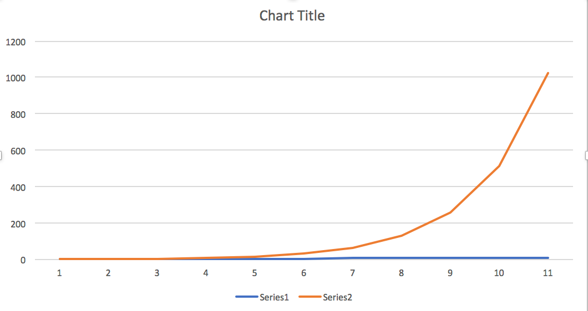
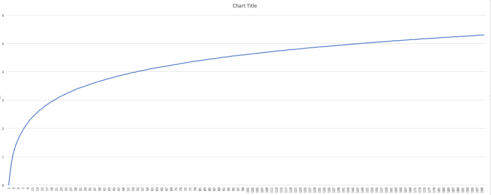

Algorithm Complexity Assignment 1
An algorithm that has O(1) is a mix-master, and an algorithm that has O(2^n) is a hand operated whisk, mixing wet cement, that slowly hardens into a cement-cicle, with a whisk for a stick.
The best case scenario for binary search is that the item being searched for is the first item in the search index (ie: the first place you look). That's a complexity of 0(1) . In the case of binary search, where a 50-50 split is used to divide the list, that’s the middle item of the list.
The worst case scenario for binary search is a time complexity of O(logN), where the last element in a half is the item you're looking for.
The bounded case scenario for binary search is O(logN).
Graph of the source .csv data: 
The limit of the function as it approaches infinity is infinity.
The complexity is O(N^2)
See function in main.cpp. It looks something like this:
float binaryWorstCase(int n) { return log(n); }I printed a list of values to a CSV file to make the graph, like this:
int main() { // how many lines to print int num = 200; // open (or create, if it doesn't exist) the file that contains // the output data ofstream myFile; myFile.open("../src/output.csv"); // write the data to a file for (int i = 1; i <= num; i++) { myFile << i << ","; myFile << binaryWorstCase(i) << endl; printf("%.8f\n", binaryWorstCase(i)); } // close the file myFile.close(); return 0; }The .csv file can be read in any graphing application (I used Excel, for expediency).
The graph showing 200 iterations of the binary search worst cases: 
The Big-O of binary search is O(logN)
The big-Omega of binary search is O(1)
The big-theta of binary search is O(logN)